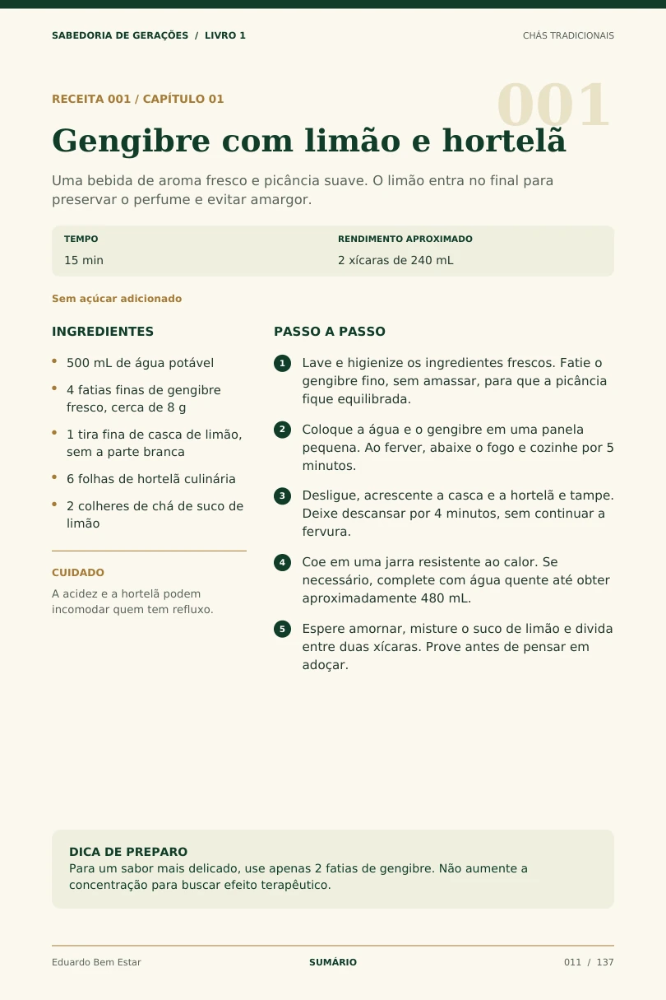
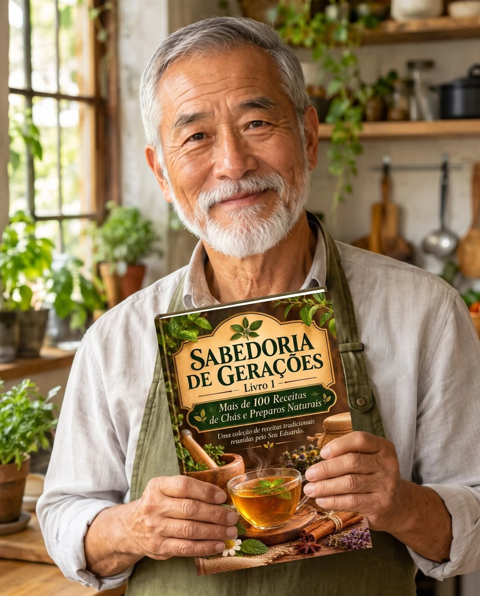
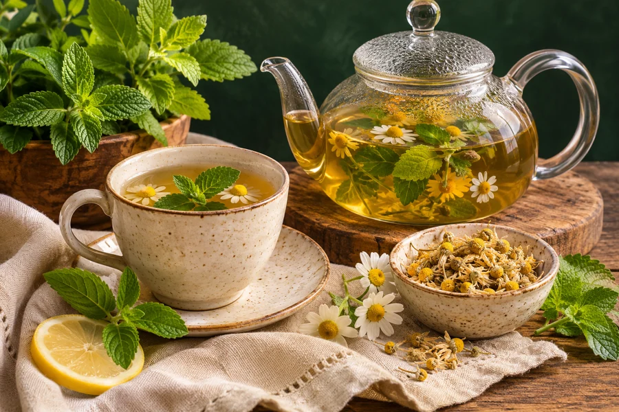

RECEITA 001
Para servir quentinhoGengibre, limão
Gengibre, limão
e hortelã
Um toque cítrico, aroma fresco e picância suave.
Sabedoria de Gerações · Livro 1
110 receitas de chás e preparos naturais para fazer em casa, com medidas, tempo e cada etapa bem explicada.
Seu livro digital completo por R$ 29,99
PDF para ler no celular, tablet ou computador.
Ver uma receita do livro
Livro digital em PDF • Imagem ilustrativa

Entre, a cozinha também é sua
Um livro inspirado na sabedoria de quem valoriza os ensinamentos da cozinha de família.
Calmo, acolhedor e atento aos detalhes, o Seu Eduardo é o personagem que conduz a experiência: apresenta receitas, explica os preparos e convida você a descobrir novos sabores.
Seu jeito é simples: escolher os ingredientes, observar as medidas e acompanhar cada etapa com tranquilidade.
O convite do Seu Eduardo:
escolha uma receita e prepare um momento gostoso.
Folheie antes de escolher
Estas são páginas reais do PDF: organização por capítulos, ingredientes com medidas e preparos explicados.
Uma pequena amostra das 137 páginas que acompanham o seu livro digital.
Experimente antes de escolher
Veja o cuidado com cada detalhe: da lista de ingredientes à dica para finalizar.
Grátis, sem cadastro. Abre nesta página.
Esse é o formato que você encontra no livro: ingredientes, medidas e cinco passos de preparo.
Dê um novo sabor ao seu dia
Dos chás quentinhos às bebidas refrescantes, descubra combinações que fazem parte do livro.
Um toque cítrico, aroma fresco e picância suave.

RECEITA 031Flores e folhas em uma combinação de sabor delicado.
Incluída no ebookUma maneira simples de variar a bebida à mesa.
Incluída no ebookImagens ilustrativas dos preparos. Estas são 3 das 110 receitas do livro.
Conheça a coleção completa
Uma seleção para sair do mesmo preparo de sempre e encontrar novas combinações para a sua cozinha.
Toque nos capítulos para conhecer os sabores.
Gengibre com limão e hortelã, maçã com canela, mirtilo com maçã e outras combinações de frutas, raízes e folhas de chá.
Camomila, melissa, hortelã, capim-limão e ervas culinárias em misturas de aromas delicados.
Águas aromatizadas, bebidas cremosas e combinações para servir frias ou mornas.
Frutas e vegetais em preparos como mirtilo com iogurte e aveia, abacaxi com pepino e morango com maçã.
Caldas e bases culinárias de morango, gengibre, pera e outras frutas para acompanhar alimentos ou diluir.
Preparos com canela, cardamomo, cacau, gengibre e cúrcuma em quantidades culinárias.
Compotas, mingaus, acompanhamentos e ideias práticas para aproveitar os ingredientes de outras maneiras.
Da compra à primeira receita
Entrega por e-mail. Um arquivo PDF para consultar no seu ritmo.
Na página de pagamento, confira o endereço de e-mail que você usa. É nele que chegará o acesso ao material.
Após a confirmação do pagamento, o e-mail com as instruções de acesso será enviado automaticamente. Confira também o spam.
Siga as instruções do e-mail para baixar o PDF. Abra no celular, tablet ou computador e escolha a primeira receita.
Prefere ler no papel? Você também pode imprimir as páginas que desejar. Não há envio de livro físico.
Sua próxima receita começa aqui
Por Eduardo Bem Estar
TUDO EM UM ÚNICO EBOOK
O livro completo por
R$ 29,99
Menos de R$ 0,28 por receita.
PDF com acesso enviado por e-mail após a confirmação do pagamento.
O valor corresponde ao ebook Sabedoria de Gerações. Os outros livros da coleção são vendidos separadamente.
Pode escolher com clareza
Toque na pergunta para ver a resposta.
O acesso ao PDF será enviado automaticamente ao e-mail informado na compra após a confirmação do pagamento. Siga as instruções recebidas e confira também as pastas de spam e promoções.
É um livro digital em PDF. Você lê o arquivo no seu aparelho. Não há envio de livro físico pelos Correios.
Sim. O arquivo PDF pode ser aberto em um celular que tenha leitor de PDF. Também pode ser consultado no tablet ou no computador. Você pode ampliar a página para ler com mais conforto.
O livro Sabedoria de Gerações, com 110 receitas em sete capítulos e 137 páginas. Os livros Hora do Chá e Horta de Chás em Casa são complementos separados.
Sim. Cada receita tem lista de ingredientes, tempo e rendimento aproximados, cinco etapas numeradas e uma dica de preparo. Você pode abrir a amostra nesta página para conferir.
Não. Você pode consultar o arquivo na tela. Se preferir usar papel, pode imprimir as páginas que desejar.
O sumário tem links: toque no capítulo e depois no nome da receita. As receitas também são numeradas para facilitar a consulta.
Para continuar descobrindo
Complementos opcionais, vendidos à parte. Não estão incluídos no valor de R$ 29,99.
20 receitas de bolos, biscoitos e salgados, com medidas e passo a passo.
Um guia de seis ervas em vasos, do plantio à colheita, com fichas de cuidados.
Receitas para guardar. Sabores para redescobrir.
O Seu Eduardo convida você a começar: escolha uma receita, separe os ingredientes e aproveite o preparo.